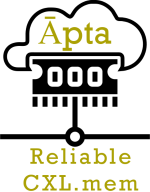

Current position: Senior Research Engineer · Arm (Architecture & Technology Group).
Research interests: I work on Systems Architecture & Design, with a focus on memory disaggregation, consistency, coherence, RAS features, persistency, and virtual memory. My bring an ethos of holistic, end-to-end system design that’s driven by real-world applications - incorporating workload understanding / algorithm analysis.
Brief bio:
I have engaged in research across academia and industry, from targeted, applied research to more open-ended, blue-sky investigations.
Earned my PhD as an Arm fellow from The University of Edinburgh (2023) and
Master’s (by research) from Indian Institute of Science (2017).
Previously, worked as a Research Scientist at Intel (2017-19) and a Technology Analyst at Goldman Sachs (2012-14).
It’s been a mix of building systems, thinking deeply about how hardware and software meet, and chasing performance across the stack—sometimes all at once!
I am also an endurance sports hobbyist: Marathons, Hyrox, Triathlon, Trekking and more.
Updates
-
Aug 2025: I am serving on the external program committee of HPCA 2026.
-
May 2025: Coatyl, Compiler auto-vec for SIMD offload using Arm Streaming SVE - accepted at C3PO @ ISC 2025
-
Apr 2025: I am serving on the external program committee of MICRO 2025.
-
Mar 2025: Completed my first HYROX race in Glasgow! (Solo - Open Men division)
-
Jul 2024: I am serving on the program committee of HPCA 2025.
-
Apr 2024: I am serving on the external review committee of MICRO 2024.
-
Mar 2024: UDON, offloading compute to Arm cores on CXL memory - accepted at HCDS @ ASPLOS 2024 — Best paper!
-
Feb 2024: I am serving as the Content Editor for ACM SIGARCH.
-
Dec 2023: I have joined the Systems Architecture and Technology group at Arm, Cambridge.
-
Oct 2023: Ran my second full marathon - Loch Ness Marathon.
-
May 2023: Successfully defended my PhD thesis at the viva. I am grateful to my thesis committee Vilas Sridharan (AMD, Senior Fellow) and Antonio Barbalace (Assoc. Professor, Univ of Edinburgh).
-
May 2023: I am serving as the web co-chair for HPCA 2024.
-
Mar 2023: Āpta, a reliable CXL disaggregated memory system - accepted at DSN 2023.
-
Jan 2023: MoU signed between Dr. M R Gorbal Foundation and Karnatak University, Dharwad to provide scholarships for physics PhD students and to support hosting guest lectures from eminent scientists in physics - Media coverage
-
Aug 2022: My family and I have registered a charity - Dr. M R Gorbal Foundation, aiming to promote research in Physics. The charity is in my grandfather's name, who was a researcher in laser spectroscopy.
-
Dec 2021: Presented "FaaS with Disaggregated Shared Memory" at UK Systems Research Workshop
-
Oct 2021: Presented "Improving Reliability & Performance of Datacenter Systems via Coherence" at ARM/UEd Conf
-
Apr 2021: Dvé, a DRAM reliability + performance scheme - accepted at ISCA 2021
-
Mar 2021: Invited to serve on the review committee of IEEE CAL
-
May 2019: Left Intel, Bangalore and moved to Edinburgh, United Kingdom to pursue a PhD
-
Jan 2019: Married Kumudha Narasimhan
-
Oct 2018: Completed Bengaluru Full Marathon in 4hr 17min
-
Feb 2018: Defended my Masters thesis. I am grateful to my thesis examiner Mainak Chauduri (Professor, IIT Kanpur)
-
Jan 2018: Presented HAShCache at HiPEAC 2018 (accepted at ACM Transactions on Architecture and Code Optimization (TACO) 2017).
-
Aug 2017: Joined Intel Labs at Bangalore as a Research Scientist
-
Aug 2025: I am serving on the external program committee of HPCA 2026. -
May 2025: Coatyl, Compiler auto-vec for SIMD offload using Arm Streaming SVE - accepted at C3PO @ ISC 2025 -
Apr 2025: I am serving on the external program committee of MICRO 2025. -
Mar 2025: Completed my first HYROX race in Glasgow! (Solo - Open Men division) -
Jul 2024: I am serving on the program committee of HPCA 2025. -
Apr 2024: I am serving on the external review committee of MICRO 2024. -
Mar 2024: UDON, offloading compute to Arm cores on CXL memory - accepted at HCDS @ ASPLOS 2024 — Best paper! -
Feb 2024: I am serving as the Content Editor for ACM SIGARCH. -
Dec 2023: I have joined the Systems Architecture and Technology group at Arm, Cambridge. -
Oct 2023: Ran my second full marathon - Loch Ness Marathon. -
May 2023: Successfully defended my PhD thesis at the viva. I am grateful to my thesis committee Vilas Sridharan (AMD, Senior Fellow) and Antonio Barbalace (Assoc. Professor, Univ of Edinburgh). -
May 2023: I am serving as the web co-chair for HPCA 2024. -
Mar 2023: Āpta, a reliable CXL disaggregated memory system - accepted at DSN 2023. -
Jan 2023: MoU signed between Dr. M R Gorbal Foundation and Karnatak University, Dharwad to provide scholarships for physics PhD students and to support hosting guest lectures from eminent scientists in physics - Media coverage -
Aug 2022: My family and I have registered a charity - Dr. M R Gorbal Foundation, aiming to promote research in Physics. The charity is in my grandfather's name, who was a researcher in laser spectroscopy. -
Dec 2021: Presented "FaaS with Disaggregated Shared Memory" at UK Systems Research Workshop -
Oct 2021: Presented "Improving Reliability & Performance of Datacenter Systems via Coherence" at ARM/UEd Conf -
Apr 2021: Dvé, a DRAM reliability + performance scheme - accepted at ISCA 2021 -
Mar 2021: Invited to serve on the review committee of IEEE CAL -
May 2019: Left Intel, Bangalore and moved to Edinburgh, United Kingdom to pursue a PhD -
Jan 2019: Married Kumudha Narasimhan -
Oct 2018: Completed Bengaluru Full Marathon in 4hr 17min -
Feb 2018: Defended my Masters thesis. I am grateful to my thesis examiner Mainak Chauduri (Professor, IIT Kanpur) -
Jan 2018: Presented HAShCache at HiPEAC 2018 (accepted at ACM Transactions on Architecture and Code Optimization (TACO) 2017). -
Aug 2017: Joined Intel Labs at Bangalore as a Research Scientist
Featured and Recent Posts
Projects & publications
More projects

Āpta: Fault-tolerant object-granular CXL disaggregated memory
Research Paper (DSN '23)read more →

Blogs & journals
More blogs